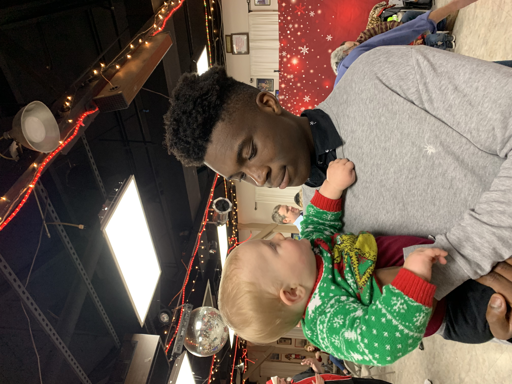
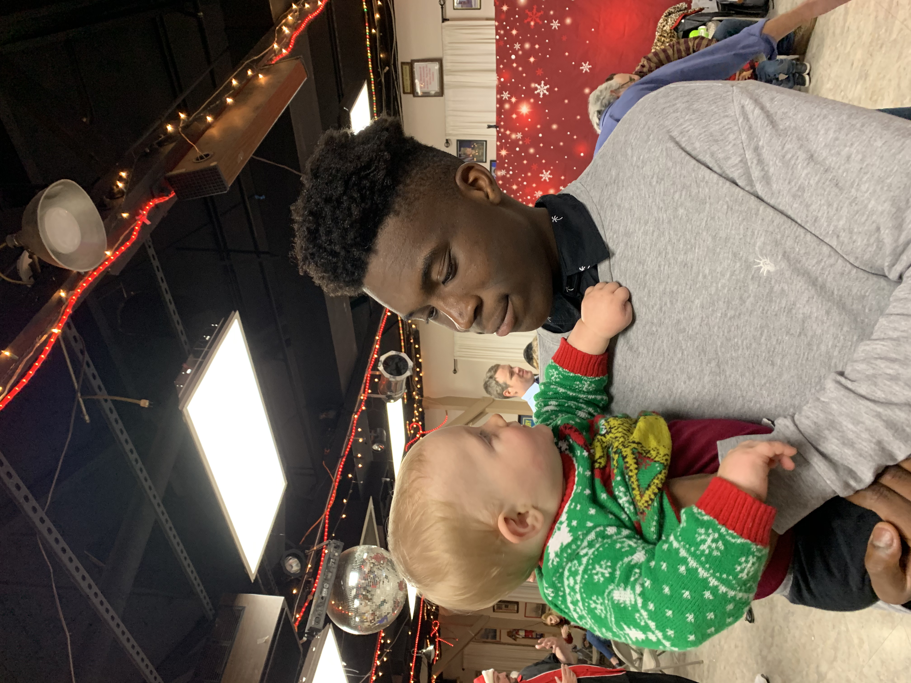
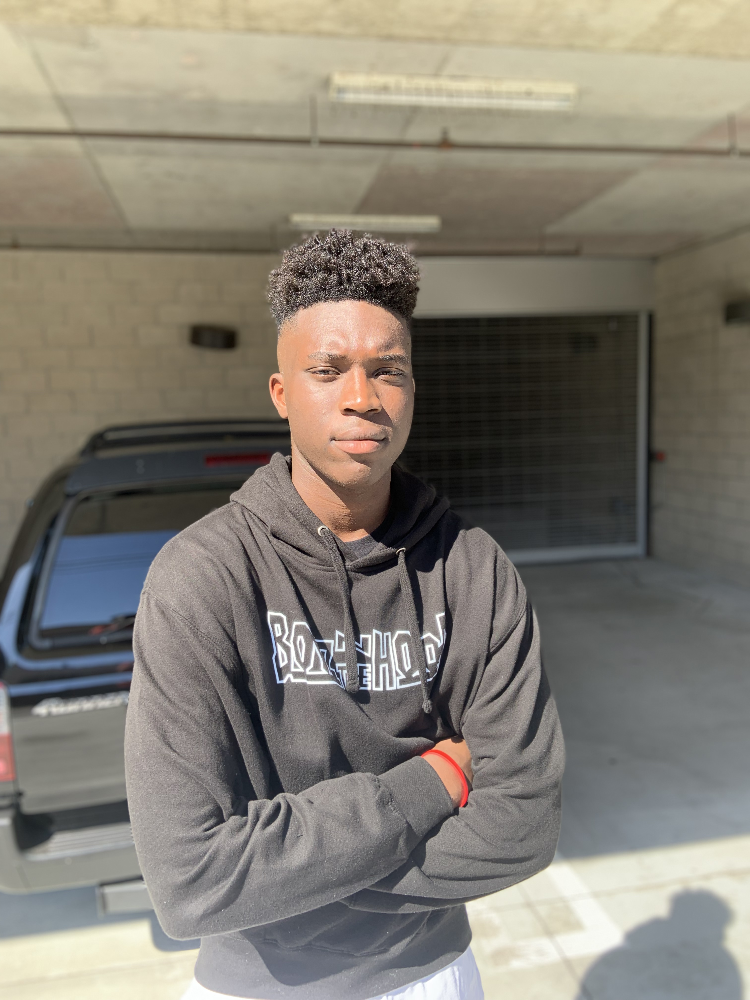
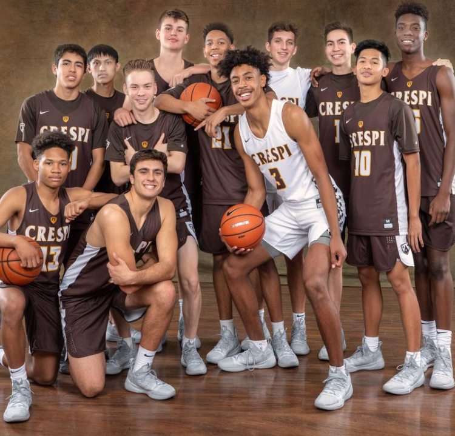
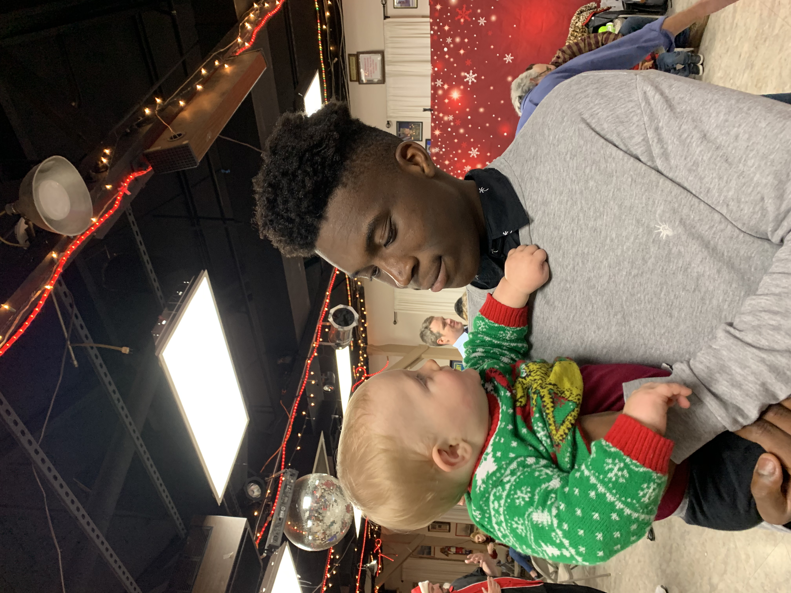
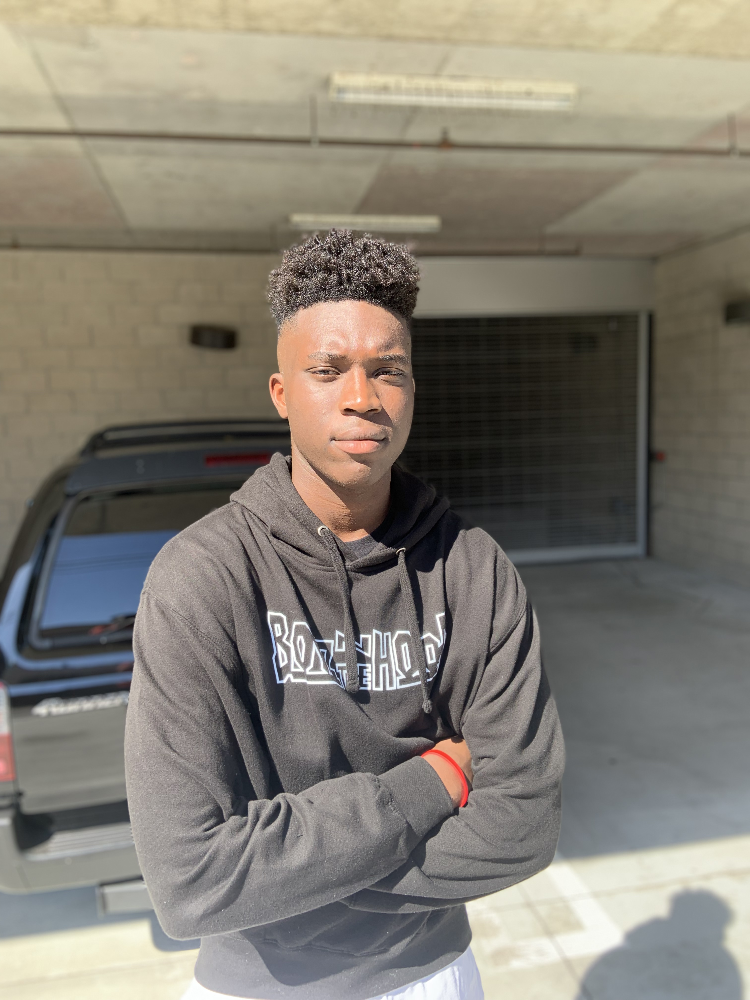
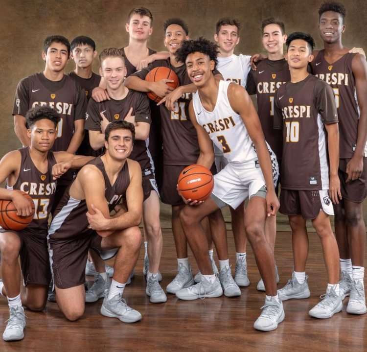

John Doe
Enter bio here
Enter bio here
My name is KC Anuluoha, and I am a philosophy major at the University of California Riverside. I am currently working towards my degree. I have many interests and one of them is music production. I started this profession a couple of months ago and I have been consistent with my craft. I am very in tune with the music that is popular nowadays so I have a good foundation as to what a beat needs in order to sound good. I have learned a lot through the youtube videos I have watched. It has helped me get a basic understanding of what artists look for in their music. As of school, I am currently a freshman. I currently have a 3.66 GPA and I am continuing to finish the requirements that are needed in order to graduate at the collegiate level. A couple of the classes that I have completed so far include English, psychology, African American Studies, and economics. Each of these classes has taught me valuable lessons that are needed to pursue career paths in those specific fields. I was born and raised in Culver City, California. Throughout my high school career, I have always participated in athletics. From my freshman through senior year of high school, I was a part of the varsity basketball program. My participation on the basketball team allowed me to receive many different accolades such as a league championship. I also had the opportunity to become the varsity captain during my senior year. Being a part of a team atmosphere has allowed me to develop many key traits such as time management, cooperation, and patience. Through these experiences, I plan to apply these same traits to my working environment. I am a recent graduate of the 2020 Crespi Carmelite High School class. While I was there, I participated in many different clubs and organizations at the school. For example, I was part of the 2019-2020 student body through my role as the athletics commissioner for the school. Through this position, I was able to organize meetings with different coaches from the school and create a system in which all students and faculty can become more involved with the sporting atmosphere at Crespi. My position also allowed athletes such as myself to receive a better support system. There have been many challenges that I have already had to face in my 18 years of life. Through each obstacle that I have been able to overcome, I have chosen to develop a philosophy that I will standby for the remainder of my days on earth. My success philosophy will be to “always put my best foot forward towards anything that I encounter and to embrace failure.” I came up with this philosophy through different experiences that I had in my life.I was raised in Culver City, California by my parents who were born in Nigeria. Nothing was ever handed to me and I had to work for the amount of success that I have today. For example, for the second half of my high school career, I made the decision to put my best foot forward and try to average a 4.0 GPA. At first, I started to doubt myself. However, I learned to put the work in that is needed to accomplish my goal. Currently, I am confident in myself to say that I successfully accomplished that goal and finished high school with a 4.0 GPA. Now that I am about to embark on my journey into college, I can use this philosophy and continue to strive for greatness at the collegiate level. I can also use what I’ve learned in this class to organize myself in ways that would allow me to become a successful individual. My philosophy can show others that it is ok to fail. People have to realize that there is no success without failure. As long as you are always trying your best, you will always find results.
Experience
Teaching Assistant
• Ran sessions to help students learn how to code
• Reviewed and graded student coding projects
• Created educational content to help promote student education
• TA'd for over 400 students each academic quarter
Education
UC Riverside
University of California Riverside
University of California Riverside
Portfolio
 



 